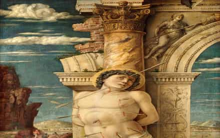

{kind=link}

The Hunch TrailTM
Uncovering Secrets in Famous Artworks
Uncovering Secrets in Famous Artworks
Unbeknownst to even the most renowned scholars, many of the world most famous artworks contain significant details deliberately hidden in plain sight. There is a phenomena called 'pareidolia' that you must harness in order to be able to identify such details. However, the scientific consensus dismisses pareidolia as being nothing more than the tendency of our minds to see faces and other forms in random visual noise. This assumption has caused most scholars to ignore the findings and claims of those who've noticed such details via pareidolia. While pareidolia certainly includes the perception of such forms within randomness, my research unequivocally indicates that many of history's greatest artists have been fluent in the language of pareidolia as a means of intentionally embedding symbolic information in their art. Below and to the left is a fantastic example that I found described online, and to the right of it is one example I discovered independently, for which I see no description anywhere online (although Sidney Geist, author of Interpeting Cézanne, was well-versed in this ability as an artist himself, and might well have already documented it). Touch or click the thumbnails below to see what is hiding in each painting.
You might assume these examples are the exceptions to the norm, and that most artists would never bother to conceal things in their art in such a way. My research, which fuses the disciplines of art, science and religion, strongly indicates otherwise. I have catalogued numerous details hidden in famous paintings, the symbolic analysis of which are often significant to the subject matter of the painting. Such visual interpretation and analysis has the potential to drastically alter the valuation of a piece of art, and can provide clues to authorship and authentication in some cases as well.
Consider the above example of the horse rider concealed within the clouds of The Martydom of Saint Sebastian by Andrea Mantegna, painted circa 1470 and presently housed in the Kunsthistorisches Museum in Vienna. Two other versions of this subject matter are also attributed to Mantegna: one housed in the Louvre in Paris, and the other in the Ca' d'Oro in Venice.

While I cannot attest to the authorship of these latter versions, I can say with reasonable confidence that the Vienna version was at least an original version and not a copy, because we have clear evidence of artistic creativity in the form of the hidden horserider.
If you are looking for a similar analysis of a specific piece of art, my research and consultancy services are available to clients in most countries, including the USA, EU, UK, Canada, Australian and New Zealand.
I'm Bany, the author of Nicky's Secret: A Christmas Story, a children's picture book that is filled with details hidden in famous works of art. Most of these are details that have remained secret for hundreds of years. And nobody else in the world knows about the vast majority of the details hidden in the book, at least at the date of writing this (which is about six months after its publication).
Furthermore, if you either own or are considering buying a painting or sculpture, I offer an art discovery service to uncover hidden details that the artist might have hidden – in plain sight – in the work of art.
Nicky's Secret is written for 4 to 8 year-old children using age-appropriate vocabulary that simultaneously conforms to both American English and British English. Children and adults alike consistently report that they are surprised and delighted by the twists and turns the story takes as it drives towards its thought-provoking conclusion.
The entire book can be read for free in low-resolution, or watch a video of the entire book being read aloud. You can also view other videos related to the book or read this fact sheet on the book.
You can buy the mass-market paperback edition of Nicky's Secret: A Christmas Story available worldwide on Amazon. It is available on Amazon and several other booksellers.
In a small number of countries, you can buy the hardback edition, which has far superior paper, binding and print quality that you will be able to enjoy for years as a proper keepsake.
The hidden details uncovered by an analysis can have a material effect on the valuation of the artwork. In some cases, the details uncovered can even provide evidence pertaining to the authenticity of piece of art and/or evidence for the attribution of a work of art to a specific artist. This evidence can occasionally be decisive.
To request a quote for the analysis of a piece of art, you will first have to pay a Quotation Fee (presently US$99). This is intended to protect you from frontrunning (learn more) and to limit requests for quotation to genuine clients only.
1. Complete this checkout form on the Stripe payment gateway (the link opens in a new window), in which you will provide your email address and contact phone number, along with payment of the Quotation Fee, which should be displayed in your local currency.
2. Within 48 hours of your payment, one of my team members will contact you to arrange submission of digital images of your artwork, as well as to discuss the details of the piece to provide an accurate quotation for the analysis of your specific artwork. Your identity and the identity of the artwork will be kept confidential unless you state otherwise.
NOTE: The art discovery service does not guarantee that the artist intentionally included any of the hidden details I might uncover. We scan for hidden forms that the artist is likely to have intentionally included. Nobody can be certain of an artist's true intent. Interesting forms can appear in art and in life by pure chance. Harnessing pareidolia without delusion is an important part of this service.
While any given piece of art will require a custom quotation, to give you a general idea of the fees involved, below are estimated service fees and turnaround times for 5 review passes applied to artworks with varying detail levels. A review pass is performed by manually scanning the artwork for hidden details, which can take several hours to perform before mental exhaustion sets in. A significant amount of preparation time is also required beforehand to be able to 'see' things differently, somewhat like preparing your eyes in darkness before stargazing. Consecutive review passes are most effective when there are several days between viewings of a single artwork. The service fee varies with the number of review passes required, the size of the painting, and how detailed it is. Obviously, if you have a very expensive artwork or a critical investment purchase, you will likely desire a far greater number of review passes to get a higher certainty of identifying the more overt hidden details.
Touch or click the thumbnails below to view each painting in greater detail.


Absolutely not. Under no circumstances will I ever front-run purchases that you are considering making, for which you have paid a Quotation Fee. Your dated receipt for the Quotation Fee will serve as proof of your prior claim in this regard. Once you have paid the Quotation Fee, neither The Hunch Trail, its proprietors, nor any of its staff will pursue any transactions in relation to your artwork, and will not disclose your name or the name of the artwork to any third parties unless you instruct us otherwise. Your dated receipt for the Quotation Fee will serve as proof of your prior interest in the artwork. This is one of the reasons we do not even begin any discussions with prospective clients until the Quotation Fee is paid, at which point the name of the artwork is submitted to us.
Religious art is my preferred genre, and it is where I do my best work. It is the subject matter I find most engaging and where I am most likely to correctly identify intentional acts of concealment by artists.
This service is available to residents of most countries, including the United States of America, European Union, United Kingdom, Canada, Australia & New Zealand. However, the following sanctioned countries are strictly prohibited from transacting with The Hunch Trail under Australian law: Russia (and Russian-controlled regions of Ukraine), North Korea, Iran, Syria, Libya, Myanmar, and Afghanistan.
You will require a valid credit card to pay the Quotation Fee. Afterwards, you need to be able to make a telegraphic transfer / international bank transfer to the Australian bank account of The Hunch Trail to pay for the discovery service itself.
As part of the payment flow for the Quotation Fee, you will be prompted to enter your email address and phone number. After payment, either I or one my team members will contact you via your supplied email address to arrange for you to send me digital photo/s of the piece of art you wish to have analysed. In the case of sculptures, multiple photos will be required from different angles.
Use of this site is subject to our Website Terms of Use and Privacy Policy.
{kind=link}